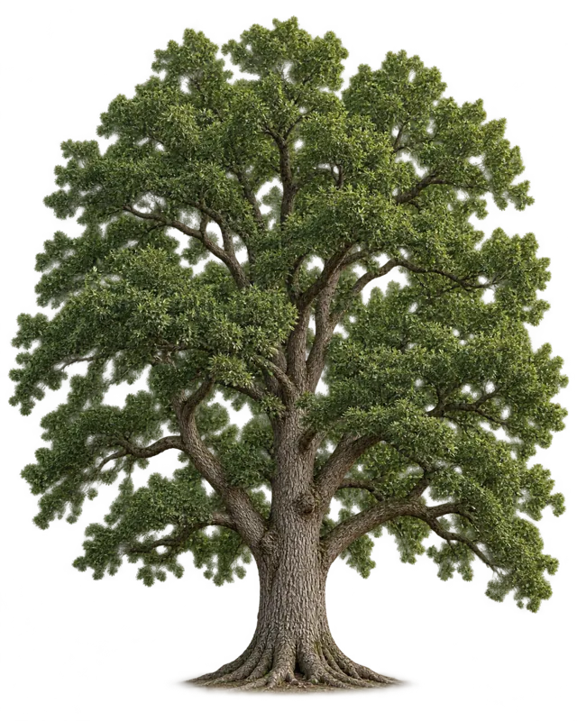

TREE SERVICES
Unique Tree Service
Tree trimming and removal in West Jordan
Unique Tree Service trims trees and large shrubs, removes dead or damaged trees and grinds stumps in West Jordan. Tell them what is in your yard and ask about the work.

Care for the trees.
Consideration for the property.
Tree trimming and removal in West Jordan
Discuss your project ↗Discuss the work.
Plan the next step.
Describe the tree.
Share its location, the condition you have noticed and the work you are considering.
Discuss an assessment.
Talk through the tree, surrounding structures, site access and the proposed scope.
Confirm the plan.
Ask about the estimate, scheduling, debris handling and any applicable permissions.
Picture your
work here.
A dedicated space for your own project photos, captions and before-and-after images.
Photo layout preview · Awaiting your imagesMake the finished work part of your first impression.
YOUR PHOTOS. YOUR CRAFT.Tree care starts
with the whole tree.
Describe the tree, its location and the work you are considering. Discuss the condition, surrounding property and an assessment.
Discuss your project ↗A few helpful
answers.
A little detail makes it easier to talk through the work you have in mind.
Ask about your projectWhat information helps with a tree enquiry?
Describe the tree location, approximate size and the work you are considering. Mention nearby buildings, fences or overhead lines so site conditions can be discussed.
What if I am unsure what work is needed?
Explain what has changed or what concerns you. Ask how an assessment is arranged and confirm the qualifications appropriate for the advice or work you need.
What should I ask about the estimate?
Confirm which trees and tasks are included, site access, debris removal, stump work if relevant and any applicable permissions. Ask for the agreed scope in writing.
Discuss your
tree service needs.
Call us ↗The tree location, nearby structures, access and the work you are considering help define the assessment.